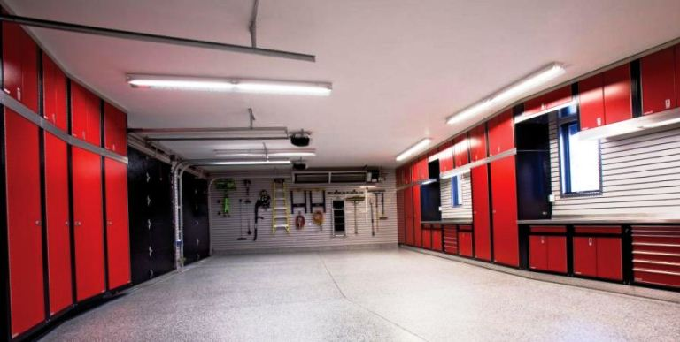
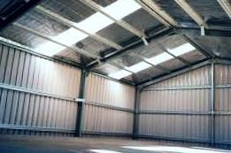

Качественный электромонтаж в Санкт-Петербурге и Ленинградской обл.
Тел. 8 904 642 08 57 Николай.
Николай.

Сделать электропроводку в гараже.
Частный электрик в СПБ и в Ленинградской обл..
Наличие системы электрообеспечения в гараже весьма важный фактор, который позволяет комфортно работать в темное время суток. В гараже с проведенным электричеством можно использовать различные приборы и оборудование, необходимое для ремонта автомобиля.

Из чего состоит электропроводка в гараже.
Еще до строительства гаража необходимо задуматься о проводке и четко представлять способы ее ввода в постройку. Следует обратить внимание на то, что ваши проекты по подводу электричества должны быть изначально одобрены в специальных контролирующих органах. В любом случае с ноля подключиться к сети вам не удастся. Для этого есть специалисты, которые обучены работать с высоким напряжением.
Электромонтаж в гараже недорого!
Проводка может быть двух типов:
- наружная проводка, когда провода ведутся от источника тока, находящегося за стенами вашего гаража, т.е. от линии электропередач;
- внутренняя, при которой в гараже имеется собственная схема электропроводки в середине постройки
Сколько стоит сделать электропроводку в гараже под ключ от частного электрика?
Площадь пола гаража в кв. м. |
Цена за электрику под ключ в руб. |
До 20 кв. м. |
От 12000 руб. |
25 |
16000. |
30 |
22000. |
40 |
26000. |
50 |
30000. |
60 |
От 34000. |
От 70 кв. м. |
От 38000 руб. |
Обращаться с электричеством должны лишь люди со специальными навыками. Так, проводить сеть от наружного источника к гаражу должен лицензированный электрик со специальным доступом. Сам факт вашего подключения к сети питания нужно подтвердить в энергонадзоре. При внутреннем типе подключения специалист должен подвести сеть к щитку и поставить автоматы со счетчиками.
Все остальные работы может сделать и сам владелец гаража, но только в том случае, если хорошо знаком с электричеством. Далее постараемся подробно рассмотреть процесс монтажа наружной и внутренней проводки в гараже.
Монтаж наружной проводки в гараже.

Здесь есть два пути прокладки провода: воздушный и подземный. Чтобы решить какой способ использовать, нужно внимательно изучить внешние факторы, расположение гаража и иных объектов. В том случае, когда центральная сеть расположена далее 25 метров от гаража необходимо будет установить дополнительные опоры высотой 6 или 3,75 метров над проезжей и пешеходной частью дороги соответственно. Около самого гаража высота опоры должна составлять 2,75 метра. В качестве проводов выбирают кабели из меди или алюминия с изоляцией. Вполне достаточно будет медного кабеля с сечением от 6 кв. мм или алюминиевого с сечением от 16 кв. мм.
Лучше всего использовать именно медный провод, так как он намного превосходит свой алюминиевый аналог по качеству. При подземном способе монтажа электропроводки в гараже схема будет состоять из ответвления от главной сети электропередач и непосредственно подземного кабеля. Обычно такие кабеля размещаются в траншее высотой до 2 метров в специальном металлическом коробе, который защищает провода от повреждений.
В самом же фундаменте гаража необходимо сделать отверстие, через которое будет вводиться кабель в постройку. Кабель должен быть помещен в трубу, диаметр которой в несколько раз больше, чем сечение кабеля. Главное – каждый кабель должен иметь свое отверстие. При воздушном способе подключения лучше всего вводить кабель через стену, но можно организовать его прокладку и через крышу, что намного сложнее из-за сложности с гидроизоляцией. Часты случаи, когда высота гаража не достигает положенных по нормам 2,75 метров.
В этом случае лучше всего установить дополнительную трубу из стали с подогнутым концом, на которой принимающие изоляторы расположены ниже линии изгиба на расстоянии 30 см между собой. В стене создается наклонное отверстие, которое не позволяет затекать воде. В свободное пространство устанавливают воронки из фарфора, а кабель помещают в эластичный шланг. Далее кабель подключают к щитку в самом гараже.
Монтаж внутренней проводки в гараже.
Данный способ также может быть реализован двумя методами: открытым и скрытым. При монтаже внутренней проводки в гараже способ зависит от материала изготовления стен постройки. Если гараж построен из кирпичей или бетона, то лучше всего использовать скрытый метод, при котором еще до начала внутренней отделки в специальные отверстия (штробы) вставляется кабель. Также можно просунуть его в естественные щели, например, между перекрытиями.
Далее выполняют отделку, а сам провод замуровывают в стену штукатуркой. Если гараж деревянный или металлический, то придется избрать открытый метод, при котором провод монтируется на стены. Прежде, чем начинать монтаж проводки по указанным выше способам необходимо подготовить электрическую схему гаража, где будет размечено местоположение всех элементов цепи:
- Местонахождение розеток, выключателей, коробок, мест соединения кабелей, светильников.
- Элементы сети должны соединяться проводами по прямым линиям, повороты производятся под прямыми углами, стартовать следует от коробки распределителя.
- Четко прописывается метод подключения всех элементов.
- Лампа и выключатели соединяются последовательным способом;
- Розетка всегда размещается до выключателя.
Если вы решили самостоятельно осуществить монтаж проводки, то можете отыскать в интернете уже готовые схемы, которые останется реализовать в своем гараже. Далее всю схему необходимо отобразить на стенах гаража и разметить места под каждый элемент. Отлично если у вас имеется специальная розеточная рулетка, также сгодится и обычный шнур.
В процессе монтажа:
- следует учитывать правильное расстояние от кабеля до потолка и труб, составляющее 10 – 15 см;
- выключатели следует размещать на расстоянии 1,5 метра от гаражных ворот, чтобы не мешать створкам при открытии;
- розетки принято размещать на расстоянии полуметра от пола.
Перед началом монтажа нужно посчитать длину проводов и число крепежей, но не забудьте к каждой линии добавить около 10 – 15 см на случай скручивания кабеля.
Внимание! Проводка должна быть трехжильная из фазы, ноля и заземления, тогда она будет безопасной. Однако большинство пытаются обходиться двумя проводами: фаза и ноль, что небезопасно. В случае возникновения неполадок именно заземление не позволит электрическому току добраться до вас. В связи изложенным выше призываем вас подумать над собственным здоровьем и установить в гараже заземление. Также обязательно нужно определиться с видом кабеля и его сечением. Лучшим выбором по-прежнему остается медный провод, который весьма гибок и выдерживает стартовые перегрузки. Выбор сечения зависит от планируемой силы тока всех приборов гаража.
Открытый способ монтажа проводки.
Для надежности и безопасности электропроводки в гараже кабель необходимо надежно крепить к стенам строения. Для этого можно использовать изолированные пробки из дерева с вкрученным в них шурупом. Также подойдут и дюбеля с пластмассовыми элементами. Дюбеля обычно забивают в подготовленные отверстия на расстоянии 50 – 60 см друг от друга. Сами провода нужно прикручивать при помощи тесьмы. В местах, где кабель скручивается, необходимо его припаять и изолировать посредством изоленты. Также можно использовать защитный короб.
Скрытый способ монтажа.
Провод просовывается через отверстие в стене. Следует сделать специальные борозды для кабеля посредством молотка и зубила или других инструментов. Крепят кабель при помощи хомутов или металлических скрепок. Также можно использовать алебастр, который надежно приклеит провод. Можно дополнительно изолировать провода в короб.
Особенности при установке электропроводки в гараже.
Процесс обустройства гаража электричеством весьма труден и вы должны быть совершенно уверенны в своих возможностях, если собрались выполнять работы самостоятельно. Однако не все вы сможете сделать сами, для установки автоматов и счетчиков в любом случае придется вызывать электрика. Также напомним вам о необходимости надежно соединять провода и такие элементы как розетки и выключатели.
 Поменять проводку в квартире.
Поменять проводку в квартире. Сколько будут стоить материалы.
Электрика в загородном доме стоимость работ.

Замена электропроводки в панельном доме.
Расценки на электропроводку квартир.
Замена проводки в хрущевке.
Электромонтаж в частном доме.
Электрика в загородном доме.
Сколько стоит замена электропроводки в двухкомнатной квартире?.
Электрик в новостройку однокомнатная квартира недорого.

Сколько стоит поменять электропроводку в 3-х комнатной квартире.